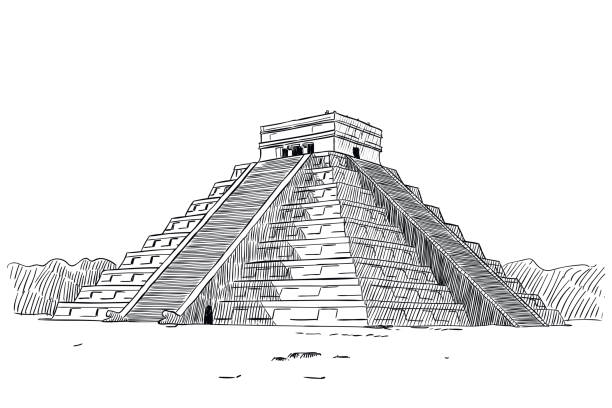

Você esta a frente de um templo esquecido
ao você entrar nessa estrutura você ve um corredor com duas portas, derrepente a entrada atras de você colapsa
Depois de subir os degrais você se encara com uma escadaria pra baixo
O ar parece pesado
teste